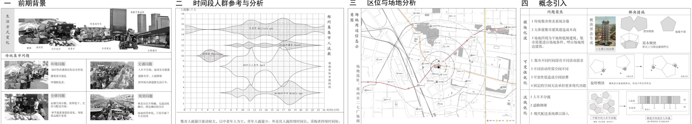
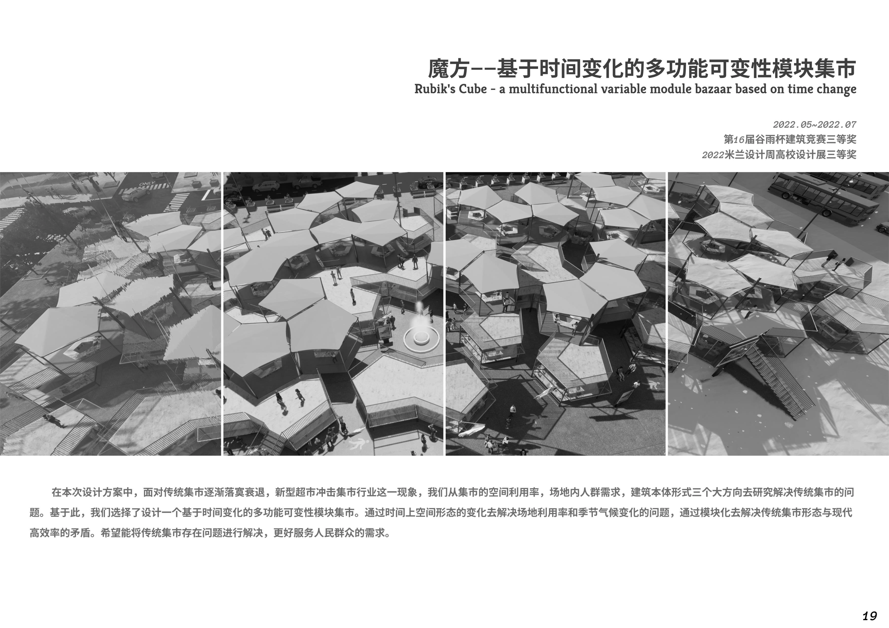
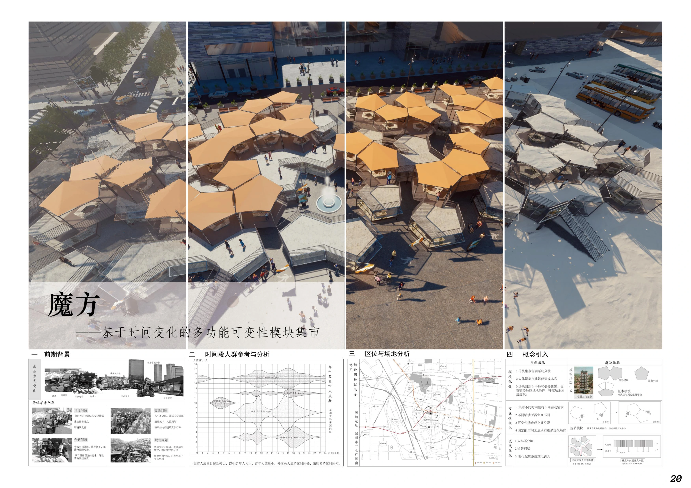
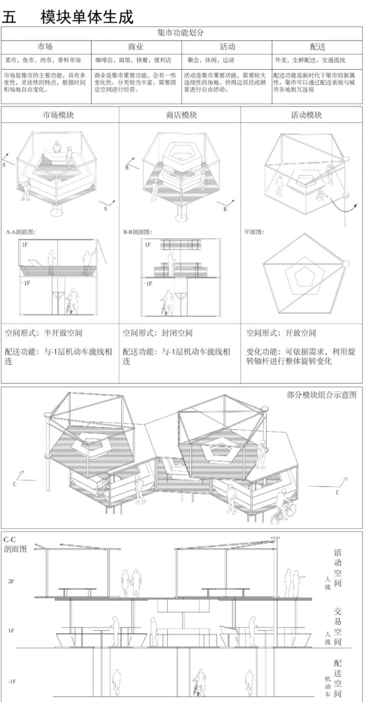
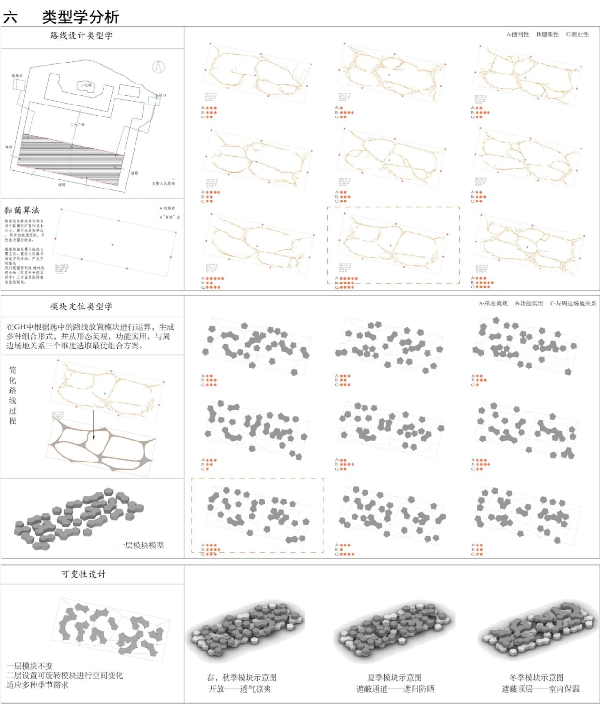
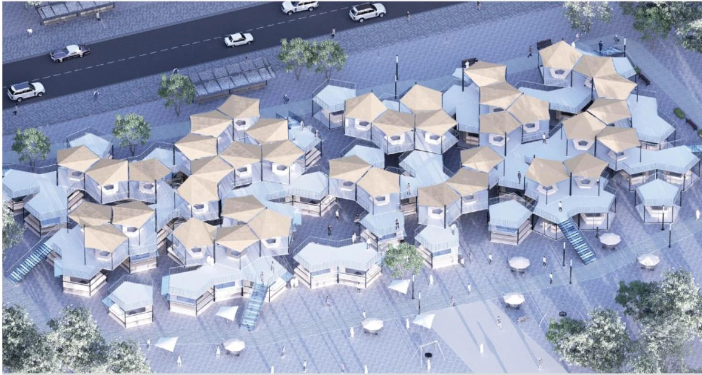
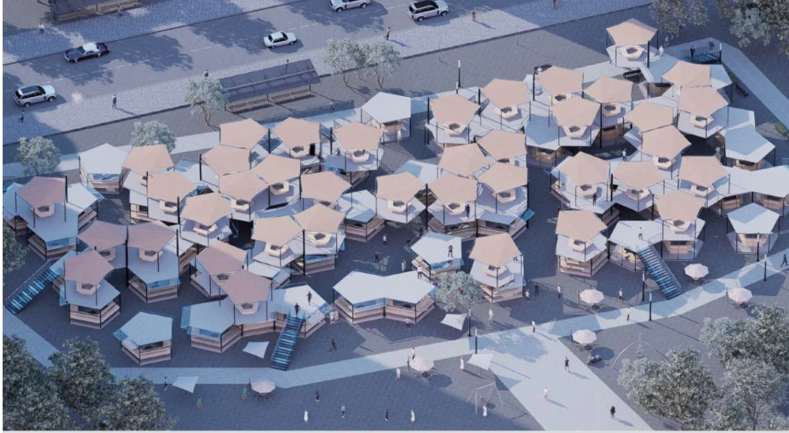
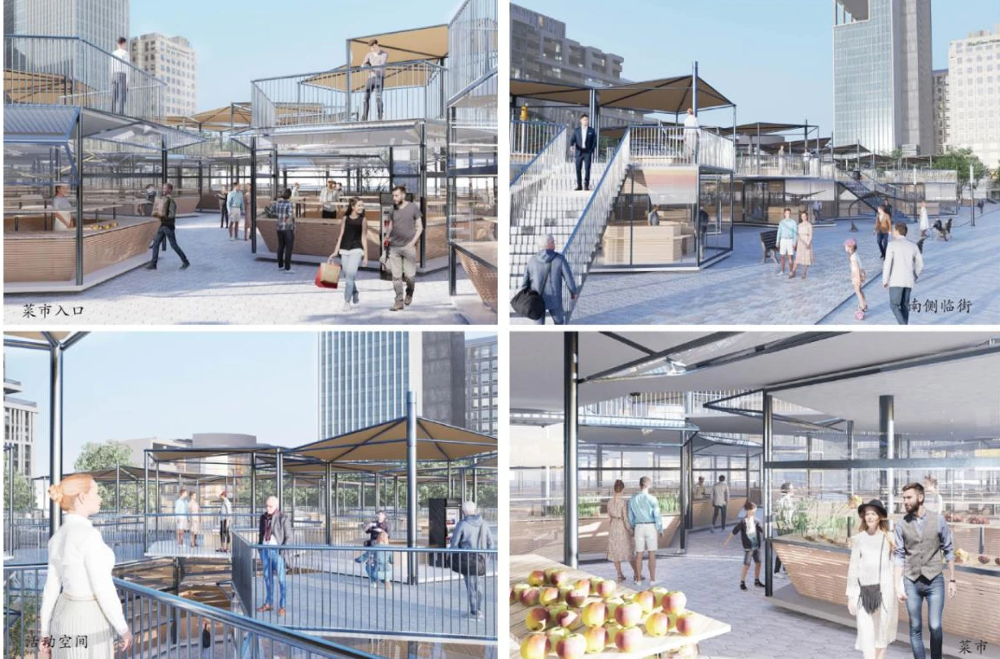
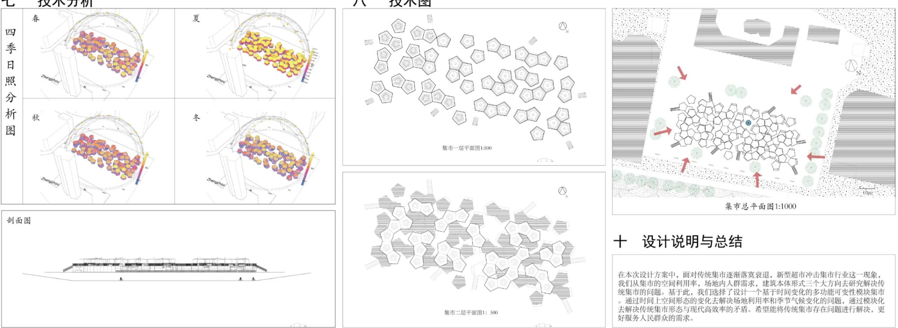
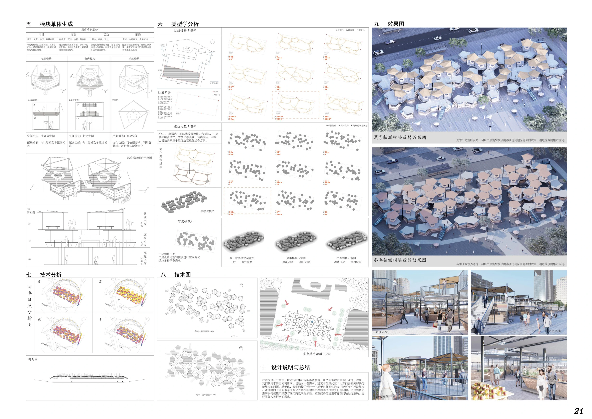

空间使用
将交易、活动与配套功能放入同一模块体系。
基于时间变化的多功能可变性模块集市
从集市空间利用、人群需求与建造成本出发，以可变化的模块单元组织交易、活动和配套空间。通过时段与季节的切换，探索传统集市与当代城市生活之间的联系。

研究从传统集市的使用问题展开：如何提高空间利用率、满足不同时段的人群需求，并控制单元的建造复杂度。方案以时间变化作为组织空间的线索。
将交易、活动与配套功能放入同一模块体系。
结合不同使用需求，研究集市空间的开放与转换。
以重复单元形成可调整的集群与街巷关系。



市场、商店与活动模块通过组合建立不同的空间关系。单体与类型学图面同步研究开合、旋转、连接及季节性布置，使模块变化与人行空间相互协调。


原方案通过模块朝向与组合方式的变化，研究不同季节的遮阳、日照和开放空间关系。


入口、二层连廊与交易界面共同构成多层次的集市体验。技术图面进一步将日照分析、总平面与剖面联系起来，说明可变模块如何形成可使用的场所。



资料来源：《作品集2.27》第2章。图注采用 PDF 实际页序；设计说明依据原图面整理。